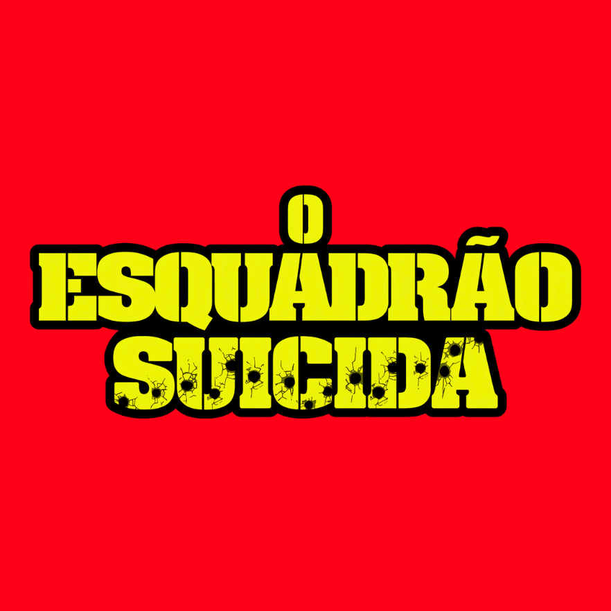

Bem-vindo ao GEEK KNOLEDGE
Vamos fazer um breve tour pelo filme Esquadrão Suicida!!
Esquadrão Suicida acompanha um grupo de perigosos criminosos recrutados pela agente do governo Amanda Waller para formar a Força-Tarefa X. Entre os escolhidos estão Arlequina, Pistoleiro, Capitão Bumerangue, El Diablo e Crocodilo. Em troca de redução de suas penas, eles recebem uma missão praticamente suicida: enfrentar uma ameaça sobrenatural, a Bruxa, que tomou conta de Midway City. Para garantir que ninguém fuja, Waller mantém os integrantes sob controle e deixa claro que, caso desobedeçam ou tentem escapar, as consequências serão fatais.
Objetivo do Filme
Dentro do Universo Estendido da DC (DCEU), o filme apresenta uma perspectiva diferente dos tradicionais heróis. Depois do falecimento do Superman, Amanda Waller acredita que o governo precisa de uma alternativa para enfrentar futuras ameaças meta-humanas. Assim, surge a Força-Tarefa X, uma equipe formada justamente por vilões e criminosos que podem ser considerados "descartáveis".
